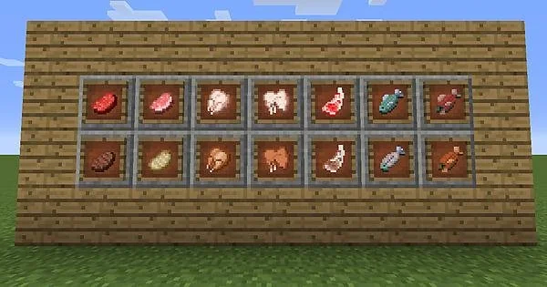

Tipi di Cibo
Il cibo è essenziale per recuperare salute e fame, e può essere coltivato, pescato, cacciato o trovato.
Cibi Coltivabili
- Pane: Prodotto da grano coltivato, ottimo per saziare.
- Carote e Patate: Coltivabili, possono essere mangiate crude o cotte.
- Zucca: Usata anche per zuppe e lanterne.


Carni e Prodotti Animali
- Carne di Mucca, Maiale, Pollo: Fonte principale di cibo, spesso da cuocere.
- Uova: Possono essere usate in ricette o per allevare animali.
- Pesce: Si può pescare o coltivare negli stagni.
Altri Cibi Utili
- Pane al Melone: Fornisce rigenerazione temporanea.
- Pane al Miele: Cura piccole quantità di salute e fame.
- Torta: Ricetta complessa ma efficace per feste o viaggi.